https://github.com/MoonshotAI/Attention-Residuals
arXiv:2603.15031v1 [cs.CL] · 2026 年 3 月 16 日
采用 PreNorm [60] 的残差连接 [12] 是现代 LLM 的标准配置，但它们以固定的单位权重累加所有层的输出。这种均匀聚合使隐藏状态随深度不受控制地增长，逐渐稀释每一层的贡献 [27]。我们提出 Attention Residuals（AttnRes），用作用于前面各层输出的 softmax attention 代替这种固定累加，使每层能够使用学得的、依赖输入的权重，有选择地聚合较早的表示。为解决大规模模型训练中对所有前序层施加 attention 所带来的内存和通信开销，我们引入 Block AttnRes：它把各层划分为块，对块级表示施加 attention，在保留 Full AttnRes 大部分收益的同时降低内存占用。结合基于缓存的流水线通信与两阶段计算策略，Block AttnRes 成为标准残差连接的一种实用替代方案，可以直接替换且开销很小。
scaling law 实验证实，该改进在不同模型规模下保持一致，消融实验也验证了依赖内容的深度方向选择的益处。我们进一步把 AttnRes 集成到 Kimi Linear 架构 [69]（总参数 48B / 激活参数 3B）中，并使用 1.4T token 进行预训练。在该模型中，AttnRes 缓解了 PreNorm 的稀释问题，使输出幅值和 gradient 沿深度分布得更加均匀，并在全部评测任务上提升了下游性能。
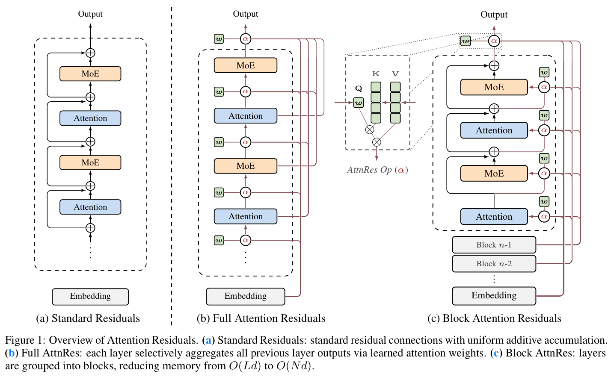
图 1：Attention Residuals 概览。（a）标准残差：采用均匀加法累加的标准残差连接。（b）Full AttnRes：每层通过学得的 attention 权重有选择地聚合全部前序层的输出。（c）Block AttnRes：把各层组成块，将内存从 \(O(Ld)\) 降至 \(O(Nd)\)。
标准残差连接 [12] 已成为现代 LLM [35, 51, 9] 事实上的基本构件。更新式 \(h_l=h_{l-1}+f_{l-1}(h_{l-1})\) 通常被理解为一条 gradient 高速通道，让 gradient 通过恒等映射绕过变换，从而实现深层网络的稳定训练。然而，残差还承担着另一个较少受到关注的作用。展开递推式可以发现，每层接收到的都是所有前序层输出的同一个均匀加权和；残差定义了信息如何沿深度聚合。序列混合与专家路由如今已采用可学习、依赖输入的加权方式 [53, 20, 9]，但这种深度方向的聚合仍由固定的单位权重支配，没有机制能够有选择地加强或抑制个别层的贡献。
实践中，PreNorm [60] 已成为主流范式，但其无权重累加会使隐藏状态的幅值随深度按 \(O(L)\) 增长，逐步稀释每层的相对贡献 [27]。早期层的信息被埋没，无法有选择地重新取出；经验上，相当一部分层可以被剪枝而只带来极小损失 [11]。近期的缩放残差路径 [54]、多流递推 [72] 等方法依然受限于加法递推，而确实引入跨层访问的方法 [36, 56] 又难以扩展规模。这种状况类似于 attention 机制提供替代方案之前，循环神经网络（RNN）在序列维度面临的挑战。
我们观察到，深度方向的累加与 RNN 的序列递推存在形式上的对偶关系。基于这种对偶关系，我们提出 Attention Residuals（AttnRes），将固定累加 \(h_l=\sum_i v_i\) 替换为 \(h_l=\sum_i\alpha_{i\to l}\cdot v_i\)，其中 \(\alpha_{i\to l}\) 是由每层一个学得的伪 query \(w_l\in\mathbb R^d\) 计算得到的 softmax attention 权重。这种轻量机制仅需每层一个 \(d\) 维向量，就能沿深度有选择地、感知内容地检索信息。事实上，可以证明标准残差连接和先前基于递推的各种变体都在执行深度方向的线性 attention；AttnRes 将其推广为深度方向的 softmax attention，在深度维度完成了从线性到 softmax 的转变，而这一转变已在序列维度产生变革性影响（§6.2、§6.1）。
在标准训练中，Full AttnRes 的额外开销可以忽略，因为它所需的各层输出本就为反向传播而保留。但在大规模训练中，通常会使用激活重计算和流水线并行，此时必须显式保存这些激活，并在流水线阶段之间传输。我们引入 Block AttnRes 来维持这种场景下的效率：将各层划分为 \(N\) 个块，每块通过标准残差归约为单个表示，仅对这 \(N\) 个块级摘要施加跨块 attention。这使内存和通信均降至 \(O(Nd)\)；再结合基础设施优化（§4），Block AttnRes 可以直接替代标准残差连接，额外训练成本很小，推理延迟开销可以忽略。
scaling law 实验证实，在不同计算预算下 AttnRes 始终优于基线，Block AttnRes 的 loss 与使用 1.25 倍计算量训练的基线相当。我们进一步把 AttnRes 集成到 Kimi Linear 架构 [69]（总参数 48B / 激活参数 3B）中，以 1.4T token 进行预训练。对所得训练动态的分析显示，AttnRes 缓解了 PreNorm 稀释：输出幅值沿深度保持有界，gradient 范数在各层之间分布更均匀。在下游基准上，我们的最终模型在全部评测任务中都优于基线。
记号。考虑形状为 \(B\times T\times d\) 的一 batch 输入序列，其中 \(B\) 是 batch 大小，\(T\) 是序列长度，\(d\) 是隐藏维度。为清晰起见，我们针对单个 token 写出公式：\(h_l\in\mathbb R^d\) 表示进入第 \(l\) 层的隐藏状态，其中 \(l\in\{1,\ldots,L\}\) 是层索引，\(L\) 为总层数。token embedding 为 \(h_1\)。函数 \(f_l\) 表示第 \(l\) 层施加的变换。在 Transformer 模型中，我们将每个 self-attention 或 MLP 视为一个独立的层。
残差学习。残差学习 [12] 被证明是训练深层网络的关键技术，因为它允许 gradient 绕过变换。具体而言，每层按如下方式更新隐藏状态：
\(h_l=h_{l-1}+f_{l-1}(h_{l-1})\)
展开该递推，第 \(l\) 层的隐藏状态就是 embedding 与全部前序层输出的和：\(h_l=h_1+\sum_{i=1}^{l-1}f_i(h_i)\)。残差连接的核心洞见是恒等映射：每层保留一条直接路径，让信息和 gradient 原样流过。在反向传播中，相对于中间隐藏状态的 gradient 为：
\(\frac{\partial\mathcal L}{\partial h_l}=\frac{\partial\mathcal L}{\partial h_L}\cdot\prod_{j=l}^{L-1}\left(I+\frac{\partial f_j}{\partial h_j}\right)\)
展开这一乘积会得到 \(I\) 加上包含各层 Jacobian \(\partial f_j/\partial h_j\) 的高阶项。恒等项始终保留，因此无论深度如何，都提供从 loss 到任意层的直接 gradient 路径。
推广残差。虽然残差有效，但更新式中固定的单位系数均匀对待每层的贡献，没有机制适应性地调整沿深度的混合。Highway 网络 [45] 通过引入可学习的逐元素门控放宽了这一限制：
\(h_l=(1-g_l)\odot h_{l-1}+g_l\odot f_{l-1}(h_{l-1})\)
其中 \(g_l\in[0,1]^d\) 在变换路径与恒等路径之间插值。更一般地，两者都是加权递推 \(h_l=\alpha_l\cdot h_{l-1}+\beta_l\cdot f_{l-1}(h_{l-1})\) 的实例：残差取 \(\alpha_l=\beta_l=1\)，Highway 取 \(\alpha_l=1-g_l,\ \beta_l=g_l\)。
局限。无论使用固定系数还是门控，两种方法都共享一个根本约束：每层只能访问其直接输入 \(h_{l-1}\)，这个单一压缩状态把所有较早的层输出混在一起，而不能访问各个输出本身。由此产生几项局限：（1）无法选择性访问：不同层类型（例如 attention 与 MLP）接收同一聚合状态，尽管它们可能受益于不同的权重分配；（2）不可逆的信息损失：聚合中丢失的信息无法在更深的层有选择地恢复；（3）输出增长：较晚的层为影响累积残差而学得越来越大的输出，这可能使训练不稳定。这些局限促使我们设计一种机制，让每层有选择地聚合所有前序层的信息。
上述局限让人联想到序列建模中的类似瓶颈，因此启发我们为深度维度寻找类似解决方案。
时间与深度的对偶。如同沿时间展开的 RNN，残差连接沿深度把全部先前信息压缩到单个状态 \(h_l\) 中。在序列建模中，Transformer 通过用 attention 替换递推 [3, 52] 改进了 RNN，使每个位置能够以依赖数据的权重有选择地访问所有前序位置。我们对深度提出同样的方法：
\(h_l=\alpha_{0\to l}\cdot h_1+\sum_{i=1}^{l-1}\alpha_{i\to l}\cdot f_i(h_i)\) （1）
其中 \(\alpha_{i\to l}\) 为各层专属的 attention 权重，满足 \(\sum_{i=0}^{l-1}\alpha_{i\to l}=1\)。不同于可以达到数百万 token 的序列长度，网络深度通常相对有限（\(L<1000\)），因此沿深度进行 \(O(L^2)\) attention 在计算上可行。我们称这种方法为 Attention Residuals，简称 AttnRes。
attention 权重可写为 \(\alpha_{i\to l}=\phi(q_l,k_i)\)，其中核函数 \(\phi:\mathbb R^d\times\mathbb R^d\to\mathbb R_{\geq0}\)，\(q_l\) 和 \(k_i\) 分别为 query 和 key 向量 [23, 70]。不同的 \(\phi\) 选择可还原不同残差变体（§6.2）；我们采用 \(\phi(q,k)=\exp(q^\top\operatorname{RMSNorm}(k))\) [66] 并进行归一化，得到沿深度的 softmax attention：
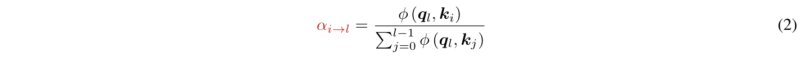
对于每一层 \(l\)，我们定义：
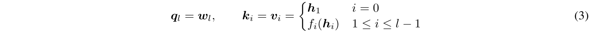
其中 query \(q_l=w_l\) 是 \(\mathbb R^d\) 中各层专属的可学习向量。\(\phi\) 内的 RMSNorm 可避免输出幅值大的层支配 attention 权重。第 \(l\) 层的输入于是为：
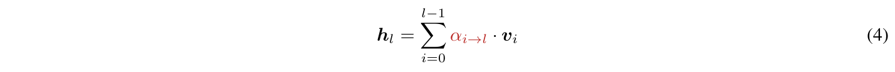
我们称这一形式为 Full Attention Residuals。对于每个 token，Full AttnRes 需要 \(O(L^2d)\) 算术运算和 \(O(Ld)\) 内存来保存各层输出。由于深度远小于序列长度，算术成本适中。
开销。这 \(O(Ld)\) 内存与为反向传播而保留的激活完全重合，所以在普通训练中 Full AttnRes 不引入额外内存开销。但在大规模场景下，激活重计算和流水线并行被广泛使用：原本会释放并重新计算的层输出现在必须一直保留，供全部后续层使用；在流水线并行中，每个输出还必须跨阶段边界传输。内存和通信开销均按 \(O(Ld)\) 增长。
按块优化。Full AttnRes 的一项有意设计是，伪 query \(w_l\) 是与该层前向计算解耦的可学习参数。这种独立性意味着，任意一组层的 attention 权重都能并行计算，无需等待它们依次产生输出；尤其可以把 \(L\) 层划分成 \(N\) 个块，每块 \(S\) 层，并将块内 attention 计算批量执行，使每层内存 I/O 从 \(O(Ld)\) 降至 \(O((S+N)d)\)（详细两阶段策略放在 §4）。然而在当前分布式训练体系中，主导成本不是本地内存带宽，而是流水线并行中的跨阶段通信：各层输出仍必须在阶段之间传输，这一 \(O(Ld)\) 通信开销无法通过本地批量执行缓解。因此我们提出下述 Block AttnRes 变体，把跨阶段表示的数量从 \(L\) 减少到 \(N\)。我们预期未来互连的改进将使完整的 \(O(Ld)\) 通信变得可行，从而充分实现 Full AttnRes 的潜力。
我们提出 Block Attention Residuals，将 \(L\) 层划分为 \(N\) 个块：每块内部通过求和将各层输出归约为单个表示，块之间仅对 \(N\) 个块级表示和 token embedding 施加完整 attention。这样，内存和通信开销均从 \(O(Ld)\) 降至 \(O(Nd)\)。
块内累加。具体而言，假定 \(L\) 可被 \(N\) 整除，我们将 \(L\) 层划分为 \(N\) 个块，每块 \(S=L/N\) 层；否则，最后一块包含剩余的 \(L\bmod N\) 层。令 \(B_n\) 表示第 \(n\) 块的层索引集合（\(n=1,\ldots,N\)）。我们对块中全部层的输出求和以形成该块：
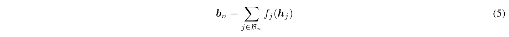
进一步用 \(b_n^i\) 表示 \(B_n\) 中前 \(i\) 层的部分和，因此 \(b_n=b_n^S\)。当 \(L\) 不能被 \(N\) 整除时，以最后一个部分和作为最后一块的表示。如同 Full AttnRes，\(\phi\) 内的 RMSNorm 可避免完整块与部分和之间的幅值差异使 attention 权重产生偏差。
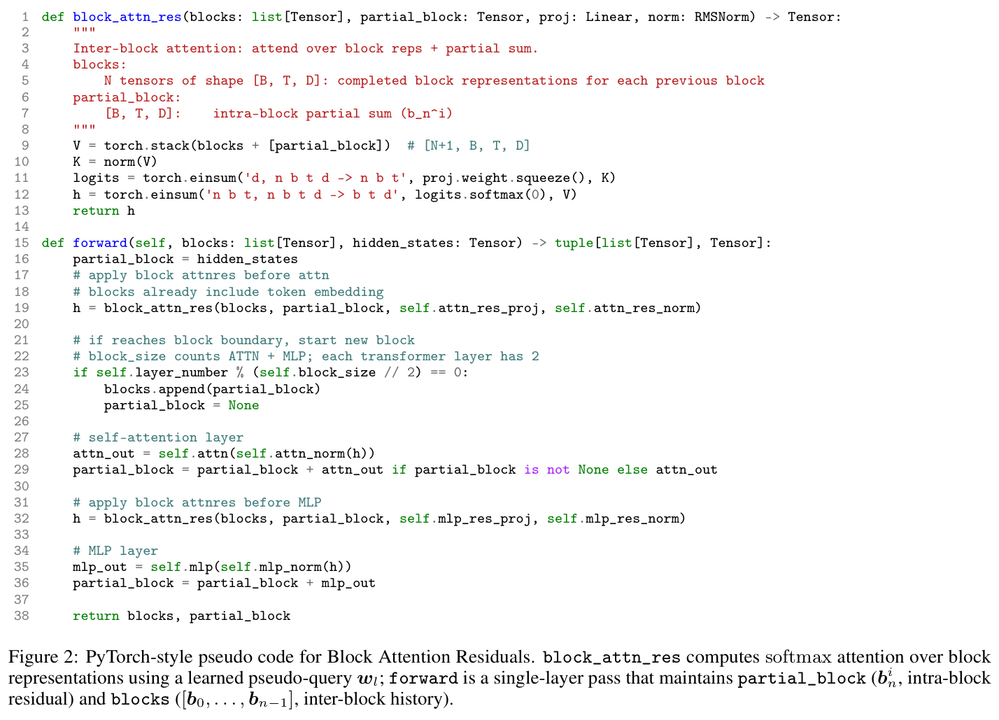
图 2：Block Attention Residuals 的 PyTorch 风格伪代码。block_attn_res 使用学得的伪 query \(w_l\) 对块表示计算 softmax attention；forward 是单层前向过程，维护 partial_block（\(b_n^i\)，块内残差）和 blocks（\([b_0,\ldots,b_{n-1}]\)，块间历史）。
块间 attention。在 Full AttnRes 中，第 \(l\) 层的输入通过对直到 \(f_{l-1}(h_{l-1})\) 为止的所有输出施加 attention 得到。按块变体以块表示替换这些单独输出，定义 \(b_0=h_1\)，使 token embedding 始终被包含为一个信息源。对于第 \(n\) 块的第 \(i\) 层，value 矩阵为：
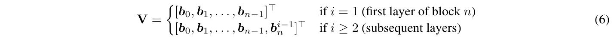
key 和 attention 权重遵循式 3 和式 2。网络第一层的输入为 token embeddings，即 \(b_0=h_1\)。在每块中，第一层接收前面各块的表示和 token embeddings，后续层还对部分和 \(b_n^{i-1}\) 施加 attention。最终输出层聚合全部 \(N\) 个块表示。图 2 给出了 Block AttnRes 的 PyTorch 风格伪代码。
效率。由于每层现在对 \(N\) 个块表示而不是 \(L\) 个独立输出施加 attention，内存从 \(O(L)\) 降至 \(O(N)\)，计算从 \(O(L^2)\) 降至 \(O(N^2)\)。块数 \(N\) 在两种极端之间插值：\(N=L\) 还原 Full AttnRes，而 \(N=1\) 退化为将 embedding 单独隔离为 \(b_0\) 的标准残差连接。经验上，我们发现 \(N\approx8\) 可在不同模型规模下恢复大部分收益，每个 token 仅需保存八个隐藏状态（见 §5）。
除内存和计算外，块结构也有益于推理延迟：块边界定义了 §3 中按块优化的调度粒度，而固定的块数 \(N\) 为 KV cache 大小提供上界。并行的块间结果通过在线 softmax [31] 与顺序的块内部分和合并，保持精确等价性（§4）。
相比标准残差连接，Block AttnRes 引入了额外的系统挑战。对于大规模模型训练，块表示必须跨流水线阶段传播，朴素实现会产生大量通信。（接下页）
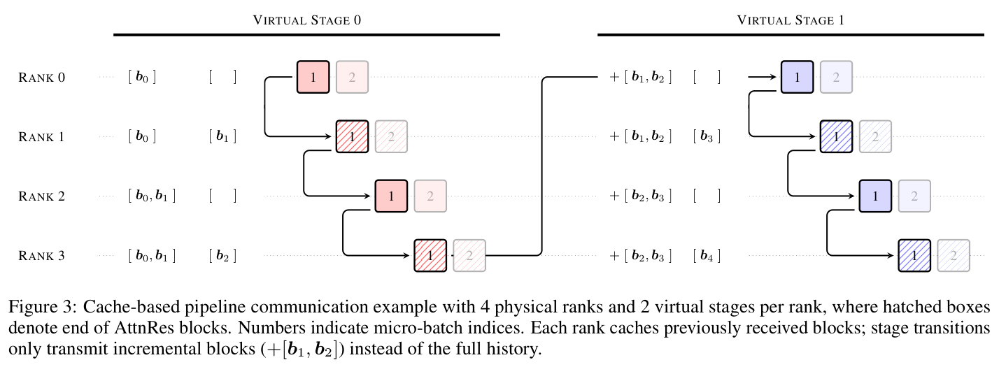
图 3：基于缓存的流水线通信示例，包含 4 个物理 rank，每个 rank 有 2 个虚拟阶段，阴影框表示 AttnRes 块的末端。数字表示 micro-batch 索引。每个 rank 缓存先前收到的块；阶段切换只传输增量块（\(+[b_1,b_2]\)），而非完整历史。
（接上页）在推理过程中，反复访问累积的块表示会增加延迟，而长上下文 prefill 会放大缓存块表示的内存成本。我们通过训练中的跨阶段缓存，以及推理中的两阶段计算策略与内存高效的 prefill 方案，解决这些挑战。
对于小规模训练，AttnRes 只增加极少的计算开销，不额外使用内存，因为无论如何都需要为反向传播保存激活。在大规模分布式训练中，流水线并行构成 AttnRes 的主要基础设施挑战。Full AttnRes 要求将全部 \(L\) 个层输出跨阶段传输；Block AttnRes 将其减少为 \(N\) 个块表示，以下优化进一步尽可能降低剩余开销。
流水线通信。在标准残差连接中，流水线并行 [18] 在相邻阶段间传输固定大小的隐藏状态，与流水线深度无关。Block AttnRes 要求每个阶段拥有全部累积块表示以进行块间 attention；在每次切换时朴素地传输完整历史会产生重复通信。
考虑交错式流水线调度 [33]，包含 \(P\) 个物理阶段，每个物理阶段有 \(V\) 个虚拟阶段。为简单起见，假设每个物理阶段平均为每个 token 产生 \(N_p\) 个维度为 \(d\) 的块表示。1总 chunk 数 \(C=PV\)（各虚拟阶段中的每个物理阶段为一个 chunk），第 \(j\) 个 chunk 累积 \(jN_p\) 个块。在每次切换时朴素地传输全部累积块，会产生如下每 token 通信成本：
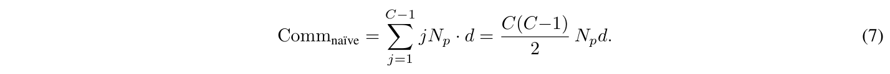
跨阶段缓存。由于每个物理阶段依次处理多个虚拟阶段，我们可以通过在本地缓存块来消除这种冗余：较早虚拟阶段收到的块留在本地内存中，无需重新传输。第一个虚拟阶段（\(v=1\)）没有缓存，按通常方式累积；对于 \(v\geq2\)，每次切换仅传输自接收方上一虚拟阶段对应 chunk 以来所累积的约 \(PN_p\) 个增量块。总通信降低为：
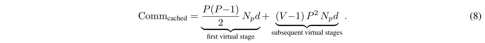
其中第一项对应首个虚拟阶段，第二项对应后续虚拟阶段。
缓存将每次切换的峰值成本从 \(O(C)\) 降至 \(O(P)\)，改善 \(V\) 倍，使其在稳态 1F1B 中能与计算完全重叠。反向传播也受益于同一方案。图 3 用 \(P=4\)、\(V=2\) 展示这一优化：在第二个虚拟阶段，缓存消除了 6 次冗余块传输。
1实际中，块边界无需与物理阶段边界对齐。例如图 3 中，每块跨越两个物理阶段，因此只有每隔一次切换才涉及新完成的块。
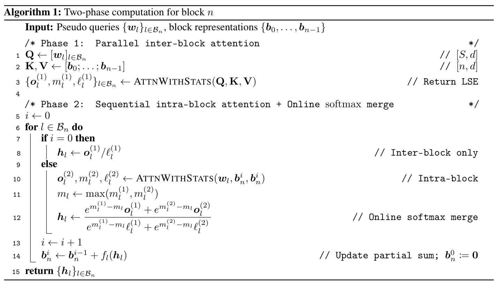
算法 1：第 \(n\) 块的两阶段计算。输入：伪 queries \(\{w_l\}_{l\in B_n}\)，块表示 \(\{b_0,\ldots,b_{n-1}\}\)。阶段 1：并行块间 attention；将 queries 组成 \(Q\)，先前块表示组成 \(K,V\)，ATTNWITHSTATS 返回输出及 LSE。阶段 2：顺序块内 attention 与在线 softmax 合并；\(i=0\) 时只使用块间结果，否则对当前部分和进行块内 attention，并按最大值重标定后合并两个阶段的输出；之后递增 \(i\)，更新部分和 \(b_n^i=b_n^{i-1}+f_l(h_l)\)，其中 \(b_n^0:=0\)，最后返回 \(\{h_l\}_{l\in B_n}\)。
内存开销。采用跨阶段缓存后，每块在全部 \(V\) 个虚拟阶段中恰好保存一次，相比标准的逐层激活缓存，这一成本变得可以忽略。关键在于，每层激活占用与标准架构完全相同：激活 checkpointing 消除了所有块间 attention 中间量，且被 checkpoint 的输入 \(p_l\) 与其替代的隐藏状态 \(h_l\) 内存大小相同。
以实际运行时间衡量，未启用流水线并行时，Block AttnRes 额外训练开销可以忽略；启用流水线并行时，实测端到端开销低于 4%。
以下两阶段计算策略同时适用于 Full 和 Block AttnRes：两者均将各层分为大小为 \(S\) 的块，阶段 1 批量执行块间 queries，阶段 2 处理顺序的块内回溯。对于 Full AttnRes，这将每层 I/O 从 \(O(Ld)\) 降至 \(O((S+N)d)\)（详细推导见附录 B）；Block AttnRes 进一步将存储表示从 \(L\) 个减少至 \(N\) 个，因为每块被压缩为单个向量。以下聚焦 Block AttnRes，详细介绍两阶段计算策略，以及用于长上下文输入的序列分片 prefill 方案。
两阶段计算策略。Block AttnRes 的逐层 attention 计算类似于自回归 decoding：块表示充当跨层复用的共享 KV cache。朴素实现在每层计算 attention residual，每次都完整遍历全部前序块，产生 \(O(L\cdot N)\) 次内存访问。由于伪 query 向量与前向计算解耦（§3），块内全部 \(S=L/N\) 个 queries 可以批量执行为单次矩阵乘法，将内存访问从 \(S\) 次读取分摊为 1 次。
算法 1 实例化了利用这一性质的两阶段计算策略。
在两阶段设计中，阶段 2 保持与标准残差连接类似的 I/O 占用，而主要额外成本来自阶段 1 的块间 attention。由于这些块间读取通过批量执行在块内全部层之间分摊，（接下页）
（接上页）每层总内存访问成本仍仅为 \((N/S+3)d\) 次读取和 \(2d\) 次写入（表 1）。在典型设置下，这远低于先前残差推广方法（如 (m)HC）的 residual stream I/O。实际中，阶段 1 还可部分重叠于块内第一层的计算，进一步降低实际耗时影响。因此，在典型推理工作负载中，端到端推理延迟开销低于 2%。
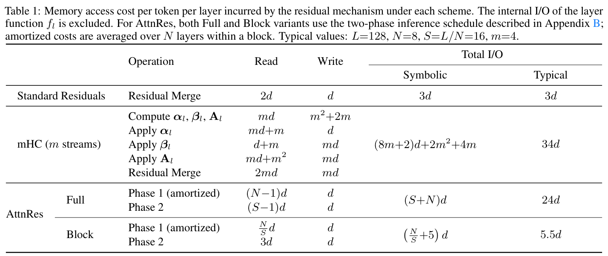
表 1：各方案中残差机制带来的每 token 每层内存访问成本。不包括层函数 \(f_l\) 内部 I/O。对于 AttnRes，Full 和 Block 两种变体均使用附录 B 中的两阶段推理调度；分摊成本在块内 \(N\) 层上取平均。典型值：\(L=128,N=8,S=L/N=16,m=4\)。
内存高效的 prefill。在 prefill 中存储块表示需要 \(N\cdot T\cdot d\) 个元素，对 128K-token 序列、8 个块而言，会占用 15 GB 内存。我们通过在 \(P\) 个张量并行设备之间沿序列维度对这些表示进行分片来缓解，使阶段 1 能够独立在本地序列分片上执行。阶段 2 的在线 softmax 合并随后集成到标准 TP all-reduce 通信路径中：输出进行 reduce-scatter，在本地合并，再通过 all-gather 重建，自然允许与 RMSNorm 等操作进行 kernel 融合。这样，每设备内存占用降为 \(N\cdot(T/P)\cdot d\)，使 128K 上下文示例从 15 GB 降到每设备约 1.9 GB。结合分块 prefill（例如 chunk 大小为 16K），额外占用进一步降至每设备不足 0.3 GB。
架构细节。我们的架构与 Kimi Linear [69] 相同，是遵循 Moonlight [28] / DeepSeek-V3 [9] 设计的混合专家（MoE）Transformer：以 3:1 比例交错排列 Kimi Delta Attention（KDA）和 Multi-Head Latent Attention（MLA）层，每层之后接一个 MoE 前馈层。唯一修改是在残差连接中加入 AttnRes；其余所有组件（模型深度、隐藏维度、专家路由及 MLP 结构）保持不变。AttnRes 仅为每层引入一个 RMSNorm 和一个伪 query 向量 \(w_l\in\mathbb R^d\)，在总参数量中所占比例可以忽略。关键是，所有伪 query 向量必须初始化为零。这确保初始 attention 权重 \(\alpha_{i\to l}\) 在源层之间均匀分布，使 AttnRes 在训练开始时退化为等权平均，并避免训练波动；我们已通过实证验证这一点。
我们扫描五种模型规模（表 2），每种规模训练三个变体：PreNorm 基线、Full AttnRes，以及约 8 个块的 Block AttnRes。它们使用 8192-token 上下文窗口及余弦学习率调度。在每个 scaling law 规模组中，所有变体共享在基线下选择的相同超参数，以确保公平比较；该设置有意偏向基线，从而使比较更保守。遵循标准做法，我们拟合形式为 \(\mathcal L=A\times C^{-\alpha}\) 的幂律曲线 [22, 15]，其中 \(\mathcal L\) 是验证 loss，\(C\) 是以 PFLOP/s-days 衡量的计算量。
规模行为。图 4 展示了拟合后的 scaling 曲线。基线遵循 \(\mathcal L=1.891\times C^{-0.057}\)，Block AttnRes 拟合为 \(\mathcal L=1.870\times C^{-0.058}\)，Full AttnRes 拟合为 \(\mathcal L=1.865\times C^{-0.057}\)。三种变体的斜率相近，但 AttnRes 在整个计算量区间均取得更低 loss。根据拟合曲线，在 5.6（接下页）
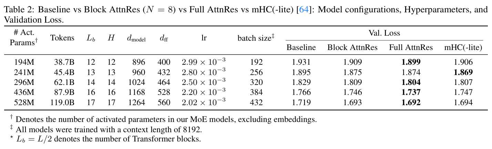
表 2：基线、Block AttnRes（\(N=8\)）、Full AttnRes 及 mHC(-lite) [64]：模型配置、超参数及验证 loss。† 表示我们的 MoE 模型中激活参数数目，不含 embeddings。‡ 所有模型的训练上下文长度均为 8192。⋆ \(L_b=L/2\) 表示 Transformer 块数。
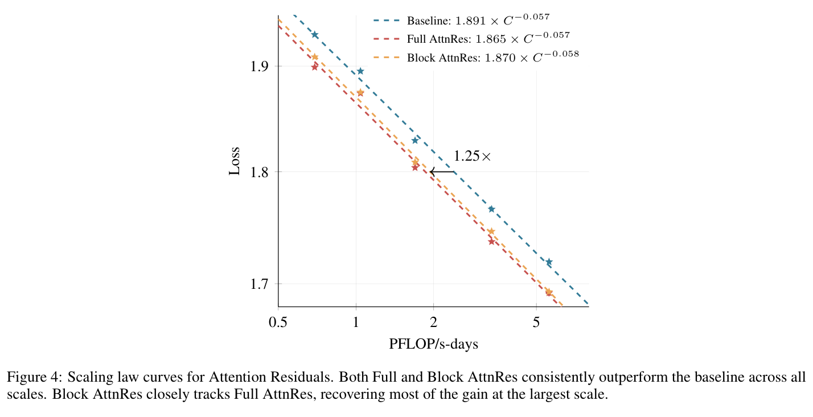
图 4：Attention Residuals 的 scaling law 曲线。Full 与 Block AttnRes 在全部规模下都持续优于基线。Block AttnRes 紧密跟随 Full AttnRes，在最大规模下恢复了大部分收益。
（接上页）PFLOP/s-days 时，Block AttnRes 达到 1.692，而基线为 1.714，相当于 1.25 倍计算优势。Full 与 Block AttnRes 的差距随规模扩大而缩小，在最大模型规模下仅为 0.001。我们还在表 2 列出 mHC(-lite) [64] 供参考。Full AttnRes 优于 mHC，而 Block AttnRes 与其相当，同时每层内存 I/O 更低：\(5.5d\)，而 \(m=4\) 流的 mHC 为 \(34d\)（表 1）。
训练方案。我们研究的最大模型基于完整的 Kimi Linear 48B 配置：27 个 Transformer 块（54 层），256 个路由专家中激活 8 个，另有 1 个共享专家，总参数 48B、激活参数 3B。该模型采用每块 6 层的 Block AttnRes，产生 9 个块，加上 token embedding，共有 10 个深度方向的信息源。
我们遵循 Kimi Linear 1.4T-token 实验相同的数据与训练方案 [69]：所有模型以 4096-token 上下文窗口、Muon 优化器 [28] 和 WSD（Warmup–Stable–Decay）学习率调度 [16] 进行预训练，全局 batch 大小为 8M token。最终模型训练分为两阶段：（i）在 1T token 上进行 WSD 预训练；随后（ii）遵循 Moonlight [28] 的退火方案，在约 400B 高质量 token 上进行中期训练。
中期训练之后，我们继续训练，逐步将序列长度扩展至 32K token。由于我们的架构采用混合 KDA/MLA attention [69]，其中 MLA 不使用位置编码（NoPE）[61]，上下文扩展无需 YaRN [37] 或 attention 温度重缩放等修改。
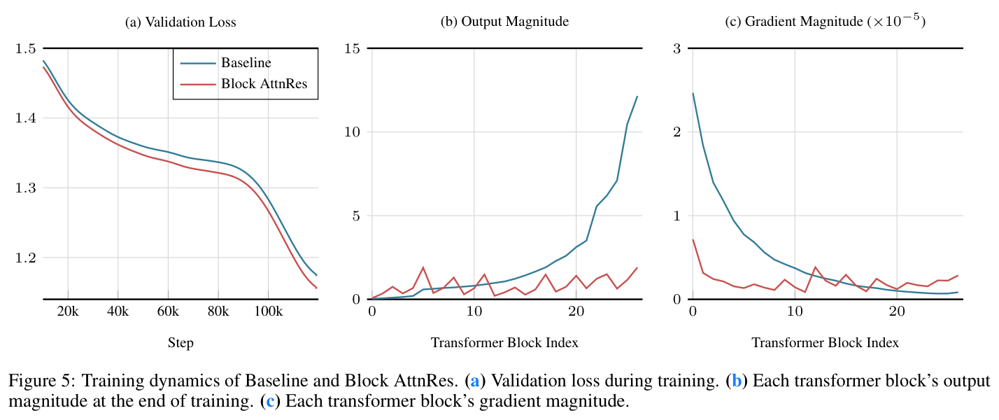
图 5：基线与 Block AttnRes 的训练动态。（a）训练期间的验证 loss。（b）训练结束时每个 transformer 块的输出幅值。（c）每个 transformer 块的 gradient 幅值。
训练动态。图 5 比较了最终基线和 Block AttnRes 模型在 1T token 训练中的动态。
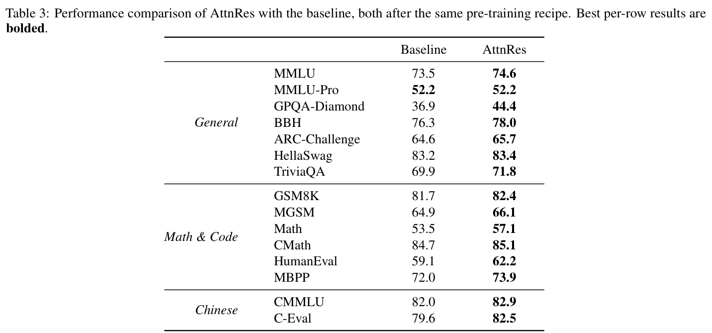
表 3：AttnRes 与基线在相同预训练方案后的性能比较。每行的最佳结果以粗体标出。
下游性能。遵循 Kimi Linear [69] 的评估协议，我们从三个方面评估两个模型（表 3）：（接下页）
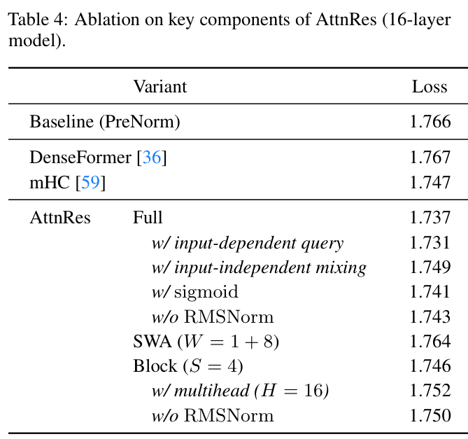
表 4：AttnRes 关键组件消融（16 层模型）。
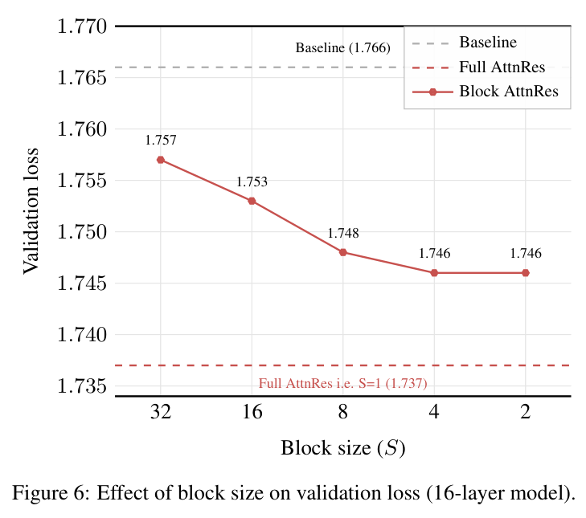
图 6：块大小对验证 loss 的影响（16 层模型）。
（接上页）
如表 3 所示，Block AttnRes 在全部基准上都达到或超越基线。提升在 GPQA-Diamond（+7.5）和 Minerva Math（+3.6）等多步推理任务，以及 HumanEval（+3.1）等代码生成任务中尤其明显；MMLU（+1.1）和 TriviaQA（+1.9）等知识导向基准也获得了扎实收益。这种模式符合如下假设：沿深度的信息流得到改善有利于组合性任务，因为后面的层可以有选择地检索较早的表示，并在其基础上进一步构建。
我们在表 2 的 16-head 模型上进行消融研究，以验证 AttnRes 的关键设计选择（表 4）。所有模型共享相同超参数及计算预算。
与先前方法比较。我们将 AttnRes 与 PreNorm 基线（loss 1.766）以及两种推广残差连接的代表性方法比较。DenseFormer [36] 允许每层访问全部前序输出，但使用固定、与输入无关的标量系数进行组合；相比基线没有收益（1.767），突出说明依赖输入的权重的重要性。mHC [59] 通过带有可学习混合矩阵的 \(m\) 个并行流引入输入依赖性，提升至 1.747。AttnRes 通过 softmax attention 进行显式的内容依赖选择，进一步推进这一点：Full AttnRes 达到 1.737，Block AttnRes 达到 1.746，每层仅使用一个 query 向量就优于两种方法。
跨层访问。我们比较三种跨层访问粒度。Full AttnRes 直接遵循时间与深度的对偶（§3），对全部前序层施加 attention，获得最低 loss（1.737）。降低其内存成本的一种简单方法是滑动窗口聚合（SWA），仅保留最近 \(W=8\) 层的输出和 token embedding；其优于基线（1.764），但远逊于 Full 与 Block AttnRes，说明有选择地访问远处层比关注大量邻近层更重要。
Block AttnRes 提供更好的权衡：当块大小 \(S=4\) 时达到 1.746，同时使每层内存开销保持恒定。图 6 扫描了从 \(S=1\)（即 Full AttnRes）到越来越粗粒度分组的全部范围。loss 随 \(S\) 增大平缓退化，\(S=2,4,8\) 都接近 1.746，而更大的块（\(S=16,32\)）趋向基线。实践中，我们为基础设施效率将块数固定为约 8（§4）。未来硬件缓解内存容量约束后，采用更细粒度的块大小或 Full AttnRes 将是进一步提高性能的自然途径。
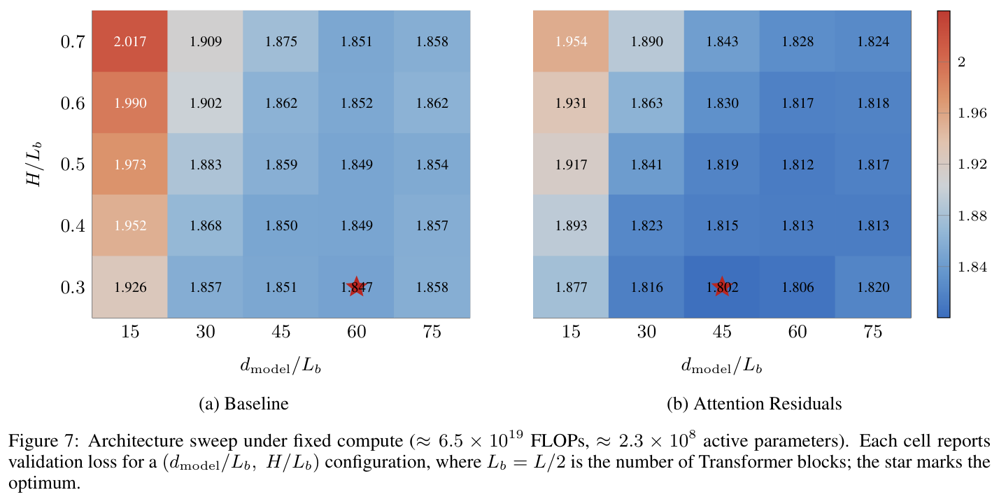
图 7：固定计算量（约 \(6.5\times10^{19}\) FLOPs，约 \(2.3\times10^8\) 激活参数）下的架构扫描。每个单元格报告一个 \((d_{\rm model}/L_b,H/L_b)\) 配置的验证 loss，其中 \(L_b=L/2\) 为 Transformer 块数；星号标记最优配置。
组件设计。我们进一步对 attention 机制的单独组件进行消融：
为理解 AttnRes 如何改变最优架构的规模规律，我们在固定计算量及参数预算下进行受控的容量重新分配研究。核心问题是，AttnRes 是否改变了偏好的深度、宽度与 attention 之间的权衡；具体而言，考虑其在深度维度的潜在优势，相比传统 Transformer 设计经验，它是否更偏好深层模型。为隔离与深度直接耦合的结构因素，我们根据内部经验观察固定每专家 MLP 扩展比（\(d_{\rm ff}/d_{\rm model}\approx0.45\)）。我们还固定总训练计算量（\(\mathrm{FLOPs}\approx6.5\times10^{19}\)）与激活参数（约 \(2.3\times10^8\)），确保任何性能变化纯粹来自架构重新分配，而非整体容量差异。在这一约束预算下，我们在 \(d_{\rm model}/L_b\in\{15,30,45,60,75\}\) 和 \(H/L_b\in\{0.3,0.4,0.5,0.6,0.7\}\) 的 \(5\times5\) 网格上枚举 25 个配置，其中 \(L_b=L/2\) 为 Transformer 块数，\(H\) 为 attention heads 数目。结果见图 7。
两张热图显示共同模式：loss 随 \(d_{\rm model}/L_b\) 增大和 \(H/L_b\) 减小而下降，且两种方法均在 \(H/L_b\approx0.3\) 达到最优。尽管有共同趋势，AttnRes 在全部 25 个配置中都比基线取得更低 loss，低 0.019–0.063。最明显区别在最优点的位置：基线在 \(d_{\rm model}/L_b\approx60\) 达到最低 loss（1.847），而 AttnRes 将其移至 \(d_{\rm model}/L_b\approx45\)（1.802）。在固定（接下页）
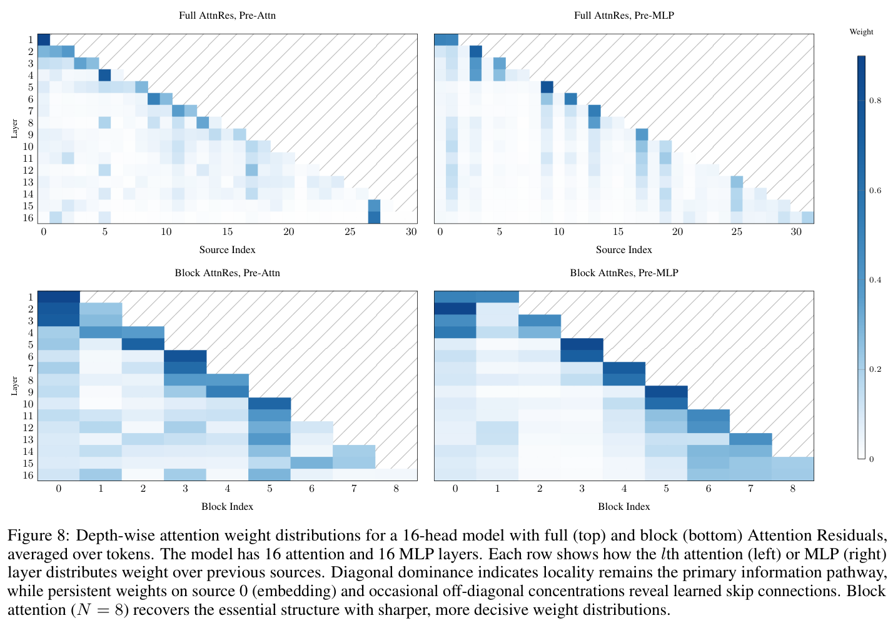
图 8：16-head 模型采用 Full（上）和 Block（下）Attention Residuals 时的深度方向 attention 权重分布，对 token 取平均。模型具有 16 个 attention 层和 16 个 MLP 层。每行显示第 \(l\) 个 attention（左）或 MLP（右）层如何在先前信息源之间分配权重。对角占优表明局部性仍是主要信息路径，而源 0（embedding）上持续存在的权重及偶尔出现的非对角集中揭示了学得的跳跃连接。块 attention（\(N=8\)）以更尖锐、更明确的权重分布恢复了基本结构。
（接上页）参数预算下，更低的 \(d_{\rm model}/L_b\) 对应更深、更窄的网络，说明 AttnRes 能更有效地利用额外深度。我们指出，这种深度偏好并不直接构成部署建议，因为深层模型通常会因其顺序计算带来更高推理延迟 [39]。相反，这一扫描是一项诊断，揭示 AttnRes 在何处获益最大，而这种深度偏好可以与推理成本一同纳入架构选择。
图 8 可视化了表 2 中 16-head 模型在 Full 和 Block（\(N=8\)）AttnRes 下学得的权重 \(\alpha_{i\to l}\)。每张热图显示第 \(l\) 个 attention 或 MLP 层（行）如何在前序信息源（列）上分配 attention，分别展示 attention 前和 MLP 前的层。我们强调三项主要观察：
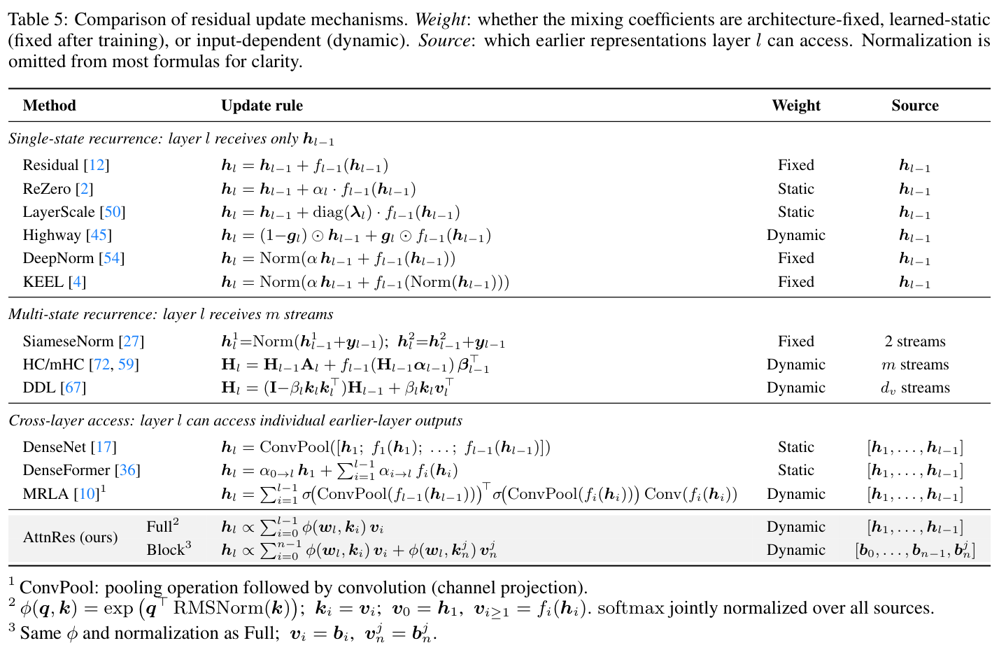
表 5：残差更新机制比较。权重：混合系数是由架构固定、学得后静态（训练后固定）还是依赖输入（动态）。信息源：第 \(l\) 层能够访问哪些较早表示。为清晰起见，多数公式省略归一化。单状态递推：第 \(l\) 层仅接收 \(h_{l-1}\)；多状态递推：第 \(l\) 层接收 \(m\) 个流；跨层访问：第 \(l\) 层可访问单独的早期层输出。1 ConvPool：池化操作后接卷积（通道投影）。2 \(\phi(q,k)=\exp(q^\top\operatorname{RMSNorm}(k))\)，\(k_i=v_i\)，\(v_0=h_1\)，\(v_{i\geq1}=f_i(h_i)\)。softmax 在全部信息源上联合归一化。3 与 Full 相同的 \(\phi\) 及归一化；\(v_i=b_i,\ v_n^j=b_n^j\)。
残差连接通过固定递推 \(h_l=h_{l-1}+f_{l-1}(h_{l-1})\) 沿深度传播信息，很像 RNN 沿时间传播信息。Test-Time Training（TTT）[46] 将这一类比的序列侧形式化（参见 Fast Weight Programmers [43, 32]），把每个递推步骤表述为针对自监督 loss 的 gradient 下降：
\(W_t=W_{t-1}-\eta\nabla\ell(W_{t-1};x_t)\) （9）
其中一个慢速网络参数化 \(\ell\)，状态 \(W\) 每个 token 更新一次。当 \(f\) 为线性时，这退化为普通线性 attention \(S_t=S_{t-1}+k_tv_t^\top\)。标准残差沿深度展现相同的加法形式，其中 \(h_l\) 充当状态，每层 \(f_l\) 充当一次“gradient 步骤”。
正如 [4] 指出，这种对偶延伸到更丰富的变体（表 5）。序列侧依赖数据的门控 [47, 63] 对应深度侧的 Highway 网络 [45]；delta rule [42, 62, 69] 对应 DDL [67]；MRLA [10] 则对应 GLA [63] 的 gated linear attention。这些方法都细化递推更新，但仍在递推范式内。AttnRes 更进一步，用直接的跨层 attention 替换沿深度的递推，如同 Transformers 用 self-attention 替换时间递推。由于当前架构的层数仍完全处于 softmax attention 的实用范围内，我们采用普通的深度方向 attention。纳入表达能力更强且内存高效（例如线性复杂度）的替代方案，是未来工作的自然方向。
上述残差变体都可以视为对前序层输出的加权聚合。我们通过深度混合矩阵 \(M\in\mathbb R^{L\times L}\) 将其形式化，其中 \(M_{i\to l}\) 是第 \(l\) 层赋予第 \(i\) 层输出的权重。各变体的区别在于权重如何产生（固定、可学习或依赖输入），以及 \(M\) 是否被约束为低秩或允许稠密。\(M\) 的半可分秩 [8] 提供了比较它们的统一视角。
具体而言，第 \(l\) 层输入为 \(h_l=\sum_{i=0}^{l-1}M_{i\to l}v_i\)，其中 \(v_0=h_1\)（embedding），对 \(i\geq1\) 有 \(v_i=f_i(h_i)\)。图 9 可视化了代表性方法的 \(M\)；下文逐一推导。
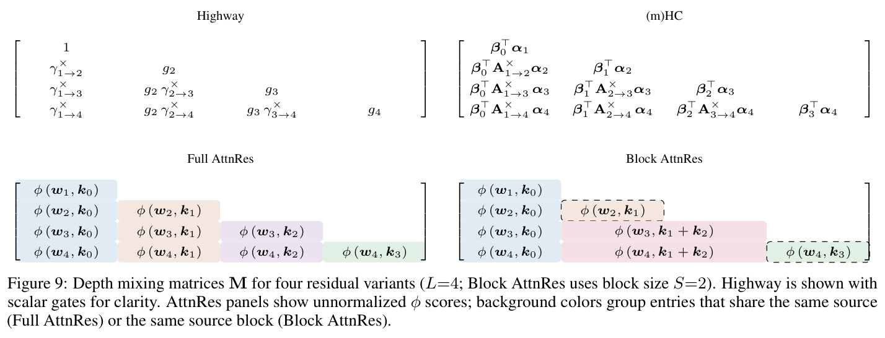
图 9：四种残差变体的深度混合矩阵 \(M\)（\(L=4\)；Block AttnRes 使用块大小 \(S=2\)）。为清晰起见，Highway 采用标量门控。AttnRes 面板显示未归一化的 \(\phi\) 分数；背景色将具有相同信息源（Full AttnRes）或相同源块（Block AttnRes）的条目分组。
标准残差 [12]：\(h_l=h_{l-1}+f_{l-1}(h_{l-1})\)。展开得到 \(h_l=\sum_{i=0}^{l-1}v_i\)，因此对全部 \(i<l\) 有 \(M_{i\to l}=1\)，\(M\) 是全为 1 的下三角矩阵：
Highway [45]：\(h_l=(1-g_l)h_{l-1}+g_lf_{l-1}(h_{l-1})\)（为清晰起见这里采用标量门控；逐元素扩展很直接）。定义携带乘积 \(\gamma^\times_{i\to l}:=\prod_{j=i+1}^l(1-g_j)\)，embedding 的权重为 \(M_{0\to l}=\gamma^\times_{1\to l}\)，对于 \(i\geq1\) 则为 \(M_{i\to l}=g_{i+1}\gamma^\times_{i+1\to l}\)。由于累积乘积经标量门控分解，\(M\) 为 1-半可分 [8]，与标准残差秩相同，但权重依赖输入。权重按构造之和为 1，使 Highway 成为 stick-breaking attention [49] 在深度方向的一个无需 softmax 的实例。
(m)HC [72, 59] 维持 \(m\) 个并行流 \(H_l\in\mathbb R^{d\times m}\)，按下式更新：
\(H_l=H_{l-1}A_l+f_{l-1}(H_{l-1}\alpha_{l-1})\beta_{l-1}^\top\)
其中 \(A_l\in\mathbb R^{m\times m}\) 是可学习转移矩阵，\(\alpha_{l-1}\in\mathbb R^m\) 将各流混合为 \(f_{l-1}\) 的单个输入，而 \(\beta_{l-1}\in\mathbb R^m\) 将输出分配回各流。展开递推给出有效权重：
\(M_{i\to l}=\beta_i^\top A^\times_{i+1\to l}\alpha_l\) （10）
其中 \(A^\times_{i\to j}:=\prod_{k=i+1}^jA_k\)。\(m\times m\) 转移使 \(M\) 为 \(m\)-半可分 [8]。mHC [59, 64] 进一步将各 \(A_l\) 约束为双随机矩阵，使沿深度的累积乘积稳定。
Full AttnRes 通过 \(\phi(w_l,k_i)=\exp(w_l^\top\operatorname{RMSNorm}(k_i))\) 及归一化计算 \(M_{i\to l}=\alpha_{i\to l}\)，其中 \(k_i=v_i\) 是依赖输入的层输出，产生稠密、秩为 \(L\) 的 \(M\)。
Block AttnRes 将各层划分为 \(N\) 块 \(B_1,\ldots,B_N\)。对于已完成的较早块 \(B_n\) 内的信息源 \(i\)，它们均共享块级 key/value \(b_n\)，所以对每个 \(i\in B_n\) 有 \(M_{i\to l}=\alpha_{n\to l}\)。在当前块内，每层还对不断演化的部分和 \(b_n^{i-1}\) 施加 attention，为每个块内位置额外引入一个不同信息源。因此 \(M\) 的有效秩介于 \(N\) 与 \(N+S\) 之间（\(S\) 为块大小），在标准残差（\(N=1\)）与 Full AttnRes（\(N=L\)）之间插值。
实用性。结构矩阵视角有两个用途。第一，它支持仅从递推形式无法明显获得的分析洞见。例如，AttnRes 依赖输入的 \(M\) 揭示了深度方向的 attention sinks（§5.4.2）：某些层无论输入如何都持续吸引高权重，类似于序列方向 attention 中的同一现象 [57]。第二，它通过揭示核 \(\phi\) 的哪些性质重要来指导新设计。例如，当 \(\phi\) 可分解为某个特征映射 \(\varphi\) 下的 \(\phi(q,k)=\varphi(q)^\top\varphi(k)\) [23] 时，深度方向 attention 退化为递推；这恰是上述 MRLA–GLA 与 DDL–DeltaNet 对应关系背后的结构。
先前残差作为深度方向的线性 attention。结构矩阵视角进一步关联到序列与深度的对偶，因为它表明现有残差变体实际上是沿深度轴的线性 attention 实例。例如，展开后的 (m)HC 权重 \(M_{i\to l}=\beta_i^\top A^\times_{i+1\to l}\alpha_l\)（式 10）具有自然的 attention 解释：\(\alpha_l\) 充当第 \(l\) 层发出的 query，\(\beta_i\) 作为概括第 \(i\) 层贡献的 key，而累积转移 \(A^\times_{i+1\to l}\) 作为深度相对位置算子 [69]，支配跨越中间层的 query–key 交互。值得注意的是，\(m\) 个并行流对应沿深度轴的状态扩展 [40, 29]，将递推状态从 \(d\) 扩大至 \(d\times m\)，从而提高 \(M\) 的半可分秩。[58] 表明，用恒等矩阵替换 \(A^\times_{i+1\to l}\) 仍取得有竞争力的性能，突出说明状态扩展的作用。从这一视角看，(m)HC 等方法是具有矩阵值状态的深度方向线性 attention，而 AttnRes 是深度方向的 softmax attention。
归一化、缩放与深度稳定性。标准残差更新 \(h_{l+1}=h_l+f_l(h_l)\) [12] 在归一化位置与 gradient 传播之间形成根本张力。PostNorm [52] 保持幅值有界，但会扭曲 gradient，因为残差路径上的反复归一化在深层累积为 gradient 消失 [60]。PreNorm [34, 60] 恢复干净的恒等路径，却引入无界幅值增长：由于 \(\|h_l\|\) 按 \(O(L)\) 增长，每层的相对贡献缩小，迫使更深层产生越来越大的输出，并限制有效深度 [27]。后续工作通过缩放残差路径 [54]、混合归一化 [73]、放大的跳跃连接 [4] 或可学习逐元素门控 [45] 调和这两个目标（见表 5）。AttnRes 用对各个较早层输出的选择性聚合替换加法递推，绕过了这一张力，既避免 PreNorm 的累积幅值增长，也避免 PostNorm 的反复尺度收缩。
多状态递推。上述所有单状态方法中，第 \(l\) 层仅以 \(h_{l-1}\) 为条件，无法从中有选择地检索各个较早层的贡献。一些方法通过将递推拓宽至多个并行流来解决：Hyper-Connections [72] 及其稳定变体 mHC [59] 维持 \(m\) 个流及可学习混合矩阵；DDL [67] 维持经 delta-rule 擦除与写入机制更新的矩阵状态；SiameseNorm [27] 维持两个共享参数的流，一个 PreNorm、一个 PostNorm，以保留恒等 gradient 及有界表示。尽管这些方法缓解信息压缩，它们仍以直接前序状态为条件；AttnRes 与其正交，在兼容任意归一化或门控方案的同时，提供对各个较早层输出的选择性访问。我们在 §6.2 讨论与 Hyper-Connections 的形式联系。
跨层连接。另一条研究路线通过让每层直接访问各个较早层输出，绕过单状态瓶颈。最简单方法使用静态权重：DenseNet [17] 拼接全部前序特征图；ELMo [38] 使用可学习标量权重计算层表示的 softmax 加权和；DenseFormer [36] 与 ANCRe [68] 为每层分配可学习标量系数，并在训练后固定。对于依赖输入的聚合，MUDDFormer [56] 通过小型 MLP 在四个解耦流之间生成依赖位置的权重；MRLA [10] 对全部前序层施加逐元素 sigmoid 门控，但其可分解 query–key 乘积更接近线性 attention，而非基于 softmax 的检索。其他方法以更有针对性的设计换取完整跨层访问：Value Residual Learning [71] 仅访问单个较早层；LAuReL [30] 通过对前 \(k\) 个激活进行低秩投影来增强残差；Dreamer [24] 结合序列 attention、深度 attention 及稀疏专家。AttnRes 将 softmax 归一化、依赖输入的权重与对全部前序层的选择性访问结合，每层仅使用一个 \(d\) 维伪 query，并引入块结构，将成本从 \(O(L^2)\) 降至 \(O(LN)\)。基于缓存的流水线通信和两阶段计算策略（§4）使 Block AttnRes 在大规模场景下实用，且开销可以忽略。
受序列与深度对偶的启发，我们引入 AttnRes，用可学习、依赖输入的深度方向 attention 替换固定、均匀的残差累加。我们通过消融研究与 scaling law 实验验证该方法，表明其收益跨规模持续存在。由于 Full AttnRes 必须在每层访问全部前序层输出，跨层聚合的内存占用按 \(O(Ld)\) 增长，对当前硬件上的大规模模型而言成本过高。因此我们提出 Block AttnRes，将各层划分为 \(N\) 个块，并对块级表示施加 attention。经验上，使用约 8 个块可恢复 Full AttnRes 的大部分收益，而随未来硬件约束放宽，更细粒度的分块仍是有前景的方向。结合跨阶段缓存与两阶段计算策略，Block AttnRes 在大规模场景下可实用，仅产生很小的训练开销及极低推理开销。
[1] Jacob Austin 等 使用大语言模型进行程序合成. 2021. arXiv: 2108.07732 [cs.PL]. 链接： https://arxiv.org/abs/2108.07732.
[2] Thomas Bachlechner 等 ReZero 即是全部所需：在大深度下快速收敛. 2020. arXiv: 2003.04887 [cs.LG]. 链接： https://arxiv.org/abs/2003.04887.
[3] Dzmitry Bahdanau, Kyunghyun Cho, 和 Yoshua Bengio. 通过联合学习对齐与翻译进行神经机器翻译. 2016. arXiv: 1409.0473 [cs.CL]. 链接： https://arxiv.org/abs/1409.0473.
[4] Chen Chen 和 Lai Wei. Post-LayerNorm 回归：稳定、富有表达能力且深层. 2026. arXiv: 2601.19895 [cs.LG]. 链接： https://arxiv.org/abs/2601.19895.
[5] Mark Chen 等 评估在代码上训练的大语言模型. 2021. arXiv: 2107.03374 [cs.LG]. 链接： https://arxiv.org/abs/2107.03374.
[6] Peter Clark 等 你认为已经解决了问答？试试 ARC，AI2 推理挑战. 发表于：arXiv:1803.05457v1 (2018).
[7] Karl Cobbe 等 训练验证器以解决数学文字题. 2021. arXiv: 2110.14168 [cs.LG]. 链接： https://arxiv.org/abs/2110.14168.
[8] Tri Dao 和 Albert Gu. Transformers 是 SSM：通过结构化状态空间对偶实现广义模型与高效算法. 发表于：CoRR abs/2405.21060 (2024). DOI： 10.48550/ARXIV.2405.21060. arXiv: 2405.21060. 链接： https://doi.org/10.48550/arXiv.2405.21060.
[9] DeepSeek-AI 等 DeepSeek-V3 技术报告. 2025. arXiv: 2412.19437 [cs.CL]. 链接： https://arxiv.org/abs/2412.19437.
[10] Yanwen Fang 等 通过层 attention 进行跨层回顾检索. 2023. arXiv: 2302.03985 [cs.CV]. 链接： https://arxiv.org/abs/2302.03985.
[11] Andrey Gromov 等 更深层令人难以理解的低效性. 2025. arXiv: 2403.17887 [cs.CL]. 链接： https://arxiv.org/abs/2403.17887.
[12] Kaiming He 等 用于图像识别的深度残差学习. 2015. arXiv: 1512.03385 [cs.CV]. 链接： https://arxiv.org/abs/1512.03385.
[13] Dan Hendrycks 等 衡量大规模多任务语言理解. 2021. arXiv: 2009.03300 [cs.CY]. 链接： https://arxiv.org/abs/2009.03300.
[14] Dan Hendrycks 等 使用 MATH 数据集衡量数学问题求解. 2021. arXiv: 2103.03874 [cs.LG]. 链接： https://arxiv.org/abs/2103.03874.
[15] Jordan Hoffmann 等 训练计算最优的大语言模型. 2022. arXiv: 2203.15556 [cs.CL]. 链接： https://arxiv.org/abs/2203.15556.
[16] Shengding Hu 等 MiniCPM：通过可扩展的训练策略揭示小语言模型的潜力. 2024. arXiv: 2404.06395 [cs.CL]. 链接： https://arxiv.org/abs/2404.06395.
[17] Gao Huang 等 密集连接卷积网络. 2018. arXiv: 1608.06993 [cs.CV]. 链接： https://arxiv.org/abs/1608.06993.
[18] Yanping Huang 等 GPipe：使用流水线并行高效训练巨型神经网络. 发表于：Advances in NeurIPS. 2019.
[19] Yuzhen Huang 等 C-eval：面向基础模型的多级、多学科中文评估套件. 发表于：Advances in NeurIPS 36 (2023), 页 62991–63010.
[20] Robert A. Jacobs 等 局部专家的自适应混合. 发表于：Neural Computation 3.1 (1991), 页 79–87. DOI： 10.1162/neco.1991.3.1.79.
[21] Mandar Joshi 等 Triviaqa：面向阅读理解的大规模远程监督挑战数据集. 发表于：arXiv 预印本 arXiv:1705.03551 (2017).
[22] Jared Kaplan 等 神经语言模型的 Scaling Laws. 2020. arXiv: 2001.08361 [cs.LG]. 链接： https://arxiv.org/abs/2001.08361.
[23] Angelos Katharopoulos 等 Transformers 是 RNN：采用线性 attention 的快速自回归 Transformers. 发表于：Proceedings of ICML. 编者：Hal Daumé III 和 Aarti Singh. PMLR, 2020, 页 5156–5165. 链接： https://proceedings.mlr.press/v119/katharopoulos20a.html.
[24] Jonas Knupp 等 深度递归 attention 混合：给予潜在推理应有的 attention. 2026. arXiv: 2601.21582 [cs.AI]. 链接： https://arxiv.org/abs/2601.21582.
[25] Aitor Lewkowycz 等 使用语言模型解决定量推理问题. 2022. arXiv: 2206.14858 [cs.CL]. 链接： https://arxiv.org/abs/2206.14858.
[26] Haonan Li 等 CMMLU：衡量中文大规模多任务语言理解. 发表于：Findings of the Association for Computational Linguistics: ACL 2024. 编者：Lun-Wei Ku, Andre Martins, 和 Vivek Srikumar. Bangkok, Thailand: Association for Computational Linguistics, 2024 年 8 月, 页 11260–11285. DOI： 10.18653/v1/2024.findings-acl.671. 链接： https://aclanthology.org/2024.findings-acl.671/.
[27] Tianyu Li 等 SiameseNorm：打破协调 Pre/Post-Norm 的壁垒. 2026. arXiv: 2602.08064 [cs.LG]. 链接： https://arxiv.org/abs/2602.08064.
[28] Jingyuan Liu 等 Muon 可扩展用于 LLM 训练. 2025. arXiv: 2502.16982 [cs.LG]. 链接： https://arxiv.org/abs/2502.16982.
[29] Brian Mak 和 Jeffrey Flanigan. 残差矩阵 Transformers：扩展 residual stream 的大小. 2025. arXiv: 2506.22696 [cs.LG]. 链接： https://arxiv.org/abs/2506.22696.
[30] Gaurav Menghani, Ravi Kumar, 和 Sanjiv Kumar. LAuReL：可学习增强残差层. 2025. arXiv: 2411.07501 [cs.LG]. 链接： https://arxiv.org/abs/2411.07501.
[31] Maxim Milakov 和 Natalia Gimelshein. softmax 的在线归一化因子计算. 2018. arXiv: 1805.02867 [cs.PF]. 链接： https://arxiv.org/abs/1805.02867.
[32] Tsendsuren Munkhdalai 等 元学习神经记忆. 发表于：ArXiv abs/1907.09720 (2019). 链接： https://api.semanticscholar.org/CorpusID:198179407.
[33] Deepak Narayanan 等 使用 Megatron-LM 在 GPU 集群上高效训练大规模语言模型. 2021. arXiv: 2104.04473 [cs.CL]. 链接： https://arxiv.org/abs/2104.04473.
[34] Toan Q. Nguyen 和 Julian Salazar. 无泪 Transformers：改进 Self-Attention 的归一化. 发表于：Proceedings of IWSLT. 编者：Jan Niehues 等 2019. 链接： https://aclanthology.org/2019.iwslt-1.17/.
[35] OpenAI 等 GPT-4 技术报告. 2024. arXiv: 2303.08774 [cs.CL]. 链接： https://arxiv.org/abs/2303.08774.
[36] Matteo Pagliardini 等 DenseFormer：通过深度加权平均增强 Transformers 中的信息流. 2024. arXiv: 2402.02622 [cs.CL]. 链接： https://arxiv.org/abs/2402.02622.
[37] Bowen Peng 等 Yarn：高效扩展大语言模型的上下文窗口. 发表于：arXiv 预印本 arXiv:2309.00071 (2023).
[38] Matthew E. Peters 等 深度上下文化词表示. 发表于：Proceedings of NAACL. 2018, 页 2227–2237. 链接： https://aclanthology.org/N18-1202/.
[39] Reiner Pope 等 高效扩展 Transformer 推理. 2022. arXiv: 2211.05102 [cs.LG].
[40] Zhen Qin 等 HGRN2：具有状态扩展的门控线性 RNN. 2024. arXiv: 2404.07904 [cs.CL].
[41] David Rein 等 Gpqa：研究生级别、无法靠 Google 搜索解决的问答基准. 发表于：First Conference on Language Modeling. 2024.
[42] Imanol Schlag, Kazuki Irie, 和 Jürgen Schmidhuber. 线性 Transformers 实际上是 Fast Weight Programmers. 发表于：Proceedings of ICML. 编者：Marina Meila 和 Tong Zhang. PMLR, 2021, 页 9355–9366. 链接： https://proceedings.mlr.press/v139/schlag21a.html.
[43] Jürgen Schmidhuber. 学习控制快速权重记忆：动态循环网络的替代方案. 发表于：Neural Computation 4.1 (1992), 页 131–139.
[44] Freda Shi 等 语言模型是多语言 Chain-of-Thought 推理器. 2022. arXiv: 2210.03057 [cs.CL]. 链接： https://arxiv.org/abs/2210.03057.
[45] Rupesh Kumar Srivastava, Klaus Greff, 和 Jürgen Schmidhuber. Highway 网络. 2015. arXiv: 1505.00387 [cs.LG]. 链接： https://arxiv.org/abs/1505.00387.
[46] Yu Sun 等 学习（在测试时学习）：具有富有表达能力隐藏状态的 RNN. 发表于：ArXiv abs/2407.04620 (2024). 链接： https://api.semanticscholar.org/CorpusID:271039606.
[47] Yutao Sun 等 Retentive Network：用于大语言模型的 Transformer 继任者. 2023. arXiv: 2307.08621 [cs.CL].
[48] Mirac Suzgun 等 有挑战性的 big-bench 任务以及 chain-of-thought 能否解决它们. 发表于：arXiv 预印本 arXiv:2210.09261 (2022).
[49] Shawn Tan 等 扩展 Stick-Breaking Attention：高效实现与深入研究. 发表于：Proceedings of ICLR. 2025.
[50] Hugo Touvron 等 让 Image Transformers 更深. 2021. arXiv: 2103.17239 [cs.CV]. 链接： https://arxiv.org/abs/2103.17239.
[51] Hugo Touvron 等 LLaMA：开放且高效的基础语言模型. 2023. arXiv: 2302.13971 [cs.CL].
[52] Ashish Vaswani 等 Attention 即是全部所需. 发表于：Advances in NeurIPS. 编者：I. Guyon 等 Curran Associates, Inc., 2017. 链接： https://proceedings.neurips.cc/paper_files/paper/2017/file/3f5ee243547dee91fbd053c1c4a845aa-Paper.pdf.
[53] Ashish Vaswani 等 Attention 即是全部所需. 发表于：Advances in NeurIPS. 编者：I. Guyon 等 卷 30. Curran Associates, Inc., 2017. 链接： https://proceedings.neurips.cc/paper_files/paper/2017/file/3f5ee243547dee91fbd053c1c4a845aa-Paper.pdf.
[54] Hongyu Wang 等 DeepNet：将 Transformers 扩展至 1,000 层. 2022. arXiv: 2203.00555 [cs.CL]. 链接： https://arxiv.org/abs/2203.00555.
[55] Yubo Wang 等 Mmlu-pro：更加稳健且有挑战性的多任务语言理解基准. 发表于：Advances in NeurIPS 37 (2024), 页 95266–95290.
[56] Da Xiao 等 MUDDFormer：通过多路动态密集连接打破 Transformers 的残差瓶颈. 发表于：Proceedings of ICML. 2025.
[57] Guangxuan Xiao 等 具有 attention sinks 的高效流式语言模型. 发表于：arXiv 预印本 arXiv:2309.17453 (2023).
[58] Tian Xie. 你的 DeepSeek mHC 可能不需要“m”. 2026. 链接： https://zhuanlan.zhihu.com/p/2010852389670908320.
[59] Zhenda Xie 等 mHC：Manifold-Constrained Hyper-Connections. 2026. arXiv: 2512.24880 [cs.CL]. 链接： https://arxiv.org/abs/2512.24880.
[60] Ruibin Xiong 等 关于 Transformer 架构中的层归一化. 2020. arXiv: 2002.04745 [cs.LG]. 链接： https://arxiv.org/abs/2002.04745.
[61] Bowen Yang 等 从 Rope 到 Nope 再返回：一种新的混合 attention 策略. 2025. arXiv: 2501.18795 [cs.CL]. 链接： https://arxiv.org/abs/2501.18795.
[62] Songlin Yang, Jan Kautz, 和 Ali Hatamizadeh. Gated Delta Networks：用 Delta Rule 改进 Mamba2. 发表于：Proceedings of ICLR. 2025. 链接： https://openreview.net/forum?id=r8H7xhYPwz.
[63] Songlin Yang 等 具有硬件高效训练的 Gated Linear Attention Transformers. 发表于：Proceedings of ICML. PMLR, 2024.
[64] Yongyi Yang 和 Jianyang Gao. mHC-lite：你不需要 20 次 Sinkhorn-Knopp 迭代. 2026. arXiv: 2601.05732 [cs.LG]. 链接： https://arxiv.org/abs/2601.05732.
[65] Rowan Zellers 等 HellaSwag：机器真的能完成你的句子吗？ 发表于：Proceedings of the 57th Annual Meeting of the Association for Computational Linguistics. 2019.
[66] Biao Zhang 和 Rico Sennrich. 均方根层归一化. 发表于：Advances in NeurIPS 32 (2019).
[67] Yifan Zhang 等 Deep Delta Learning. 2026. arXiv: 2601.00417 [cs.LG]. 链接： https://arxiv.org/abs/2601.00417.
[68] Yilang Zhang 等 ANCRe：用于高效深度扩展的自适应神经连接重新分配. 2026. arXiv: 2602.09009 [cs.LG]. 链接： https://arxiv.org/abs/2602.09009.
[69] Yu Zhang 等 Kimi Linear：富有表达能力且高效的 Attention 架构. 2025. arXiv: 2510.26692 [cs.CL].
[70] Shu Zhong 等 从关联记忆角度理解 Transformer. 2025. arXiv: 2505.19488 [cs.LG]. 链接： https://arxiv.org/abs/2505.19488.
[71] Zhanchao Zhou 等 Value Residual Learning. 发表于：Proceedings of ACL. 编者：Wanxiang Che 等 Vienna, Austria, 2025, 页 28341–28356. 链接： https://aclanthology.org/2025.acl-long.1375/.
[72] Defa Zhu 等 Hyper-Connections. 2025. arXiv: 2409.19606 [cs.LG]. 链接： https://arxiv.org/abs/2409.19606.
[73] Zhijian Zhuo 等 HybridNorm：通过混合归一化实现稳定且高效的 Transformer 训练. 2025. arXiv: 2503.04598 [cs.CL]. 链接： https://arxiv.org/abs/2503.04598.
作者按贡献重要程度排序，担任项目领导角色的作者列在最后。
| Guangyu Chen* | Yanru Chen |
| Yu Zhang* | Xin Men |
| Jianlin Su* | Haiqing Guo |
| Weixin Xu | Y. Charles |
| Siyuan Pan | Haoyu Lu |
| Yaoyu Wang | Lin Sui |
| Yucheng Wang | Jinguo Zhu |
| Guanduo Chen | Zaida Zhou |
| Bohong Yin | Weiran He |
| Yutian Chen | Weixiao Huang |
| Junjie Yan | Xinran Xu |
| Ming Wei | Yuzhi Wang |
| Y. Zhang | Guokun Lai |
| Fanqing Meng | Yulun Du |
| Chao Hong | Yuxin Wu |
| Xiaotong Xie | Zhilin Yang |
| Shaowei Liu | Xinyu Zhou |
| Enzhe Lu | |
| Yunpeng Tai |
* 同等贡献
Full AttnRes 的朴素实现在每层扫描全部前序层输出，因此内存流量随深度线性增长。然而如 §4.2 所述，伪 query \(w_l\) 是与输入和隐藏状态均独立的可学习参数。因此我们可以在两阶段调度中跨层批量执行块间访问，将总 I/O 降至远低于朴素上界的水平。
注意，下文引入的块划分纯粹是一种推理调度手段。与 Block AttnRes 不同，它不改变模型架构，也不以块摘要替换逐层信息源；它只是将分摊论证具体化。
设置。设模型有 \(L\) 层，隐藏维度为 \(d\)，划分为 \(N\) 个连续块，每块大小为 \(S=L/N\)。推理一次处理一个块：阶段 1 联合计算块内全部 \(S\) 层对所有前序块的块间 attention，阶段 2 顺序遍历块内依赖。
考虑含 \(S\) 层的第 \(n\) 块。queries \(\{w_l\}_{l\in B_n}\) 在执行开始前就全部已知，因此 \((n-1)S\) 个前序 key–value 对只需从 HBM 读取一次，并在全部 \(S\) 个 queries 中复用。因此第 \(n\) 块的读取成本为：
\(\operatorname{Read}_{\rm inter}^{(n)}=2(n-1)Sd\) （11）
其中因子 2 计入 key 与 value。对全部 \(N\) 个块求和，并使用 \(SN=L\)：
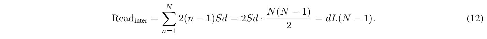
阶段 1 还为每层写入一个 \(d\) 维输出，因而每块有 \(\operatorname{Write}_{\rm inter}^{(n)}=Sd\)，总计：
\(\operatorname{Write}_{\rm inter}=Ld\) （13）
阶段 1 覆盖当前块之前的全部信息源。但在块内，每层依赖其前面的层，因此必须按顺序处理这些依赖。第 \(t\) 层（\(1\leq t\leq S\)）读取 \(t-1\) 个块内 key–value 对，成本为 \(2(t-1)d\)。在一块内求和：
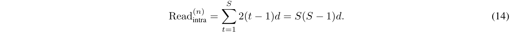
阶段 2 也为每层写入一个输出，因此 \(\operatorname{Write}_{\rm intra}^{(n)}=Sd\)。
在全部 \(N\) 个块上将两阶段求和：
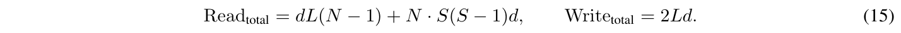
除以 \(L\)，并使用 \(SN=L\)：
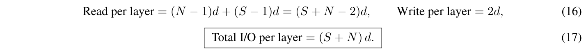
式 16 的每层读取量为 \((N-1)d+(S-1)d=(S+N-2)d\)，每层写入量为 \(2d\)；式 17 的每层总 I/O 为 \((S+N)d\)。
因此批量执行块间读取将每层 I/O 从 \(O(L)\) 降至 \(O(S+N)\)。该调度遵循与 Block AttnRes 相同的两阶段划分：块间 attention 占据大部分流量，而顺序计算局限于各块内部。